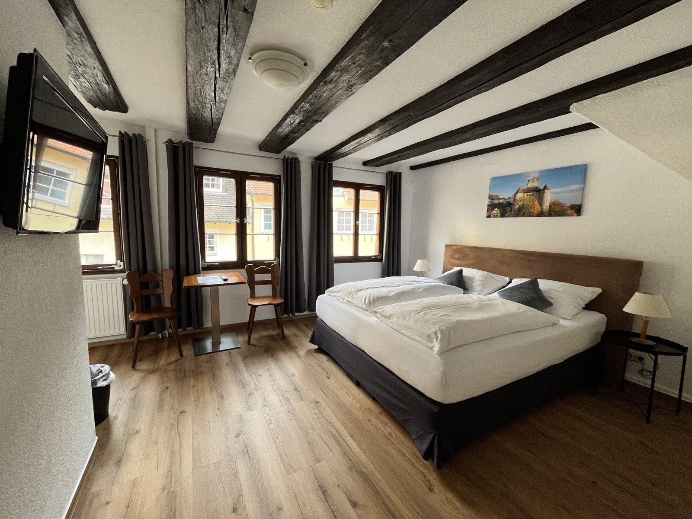
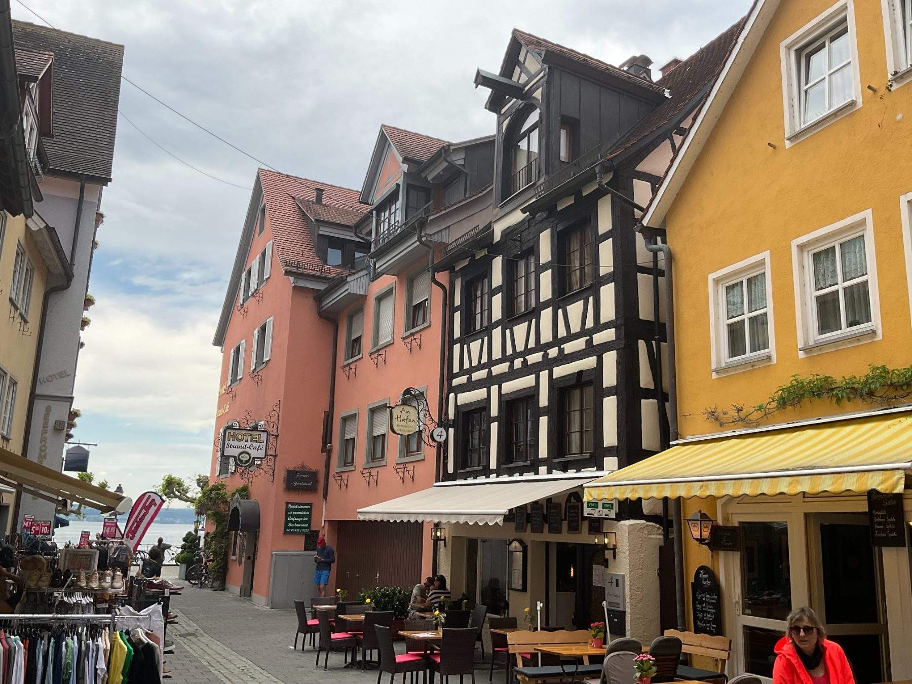
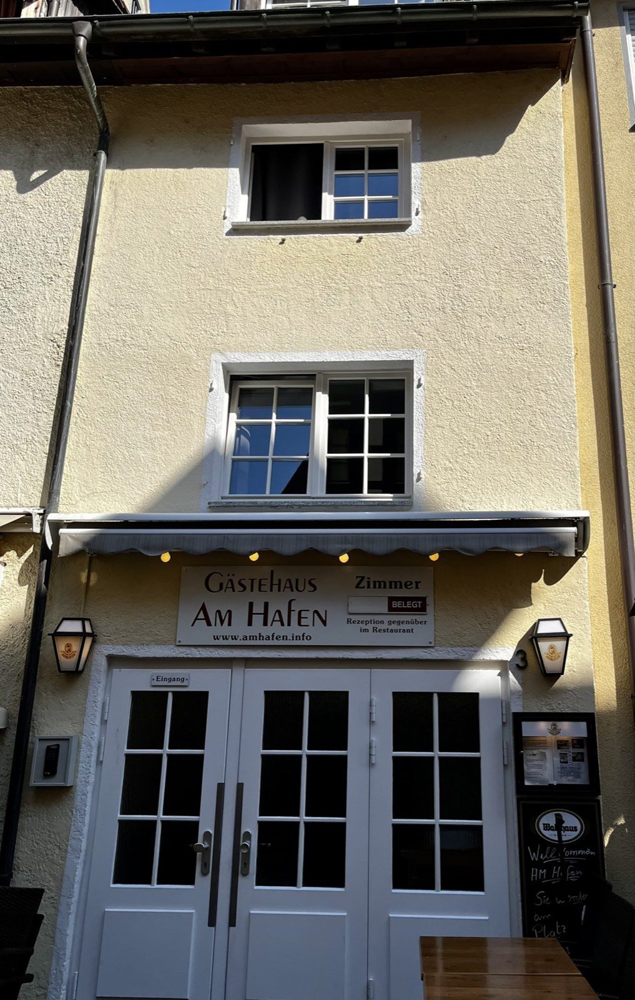
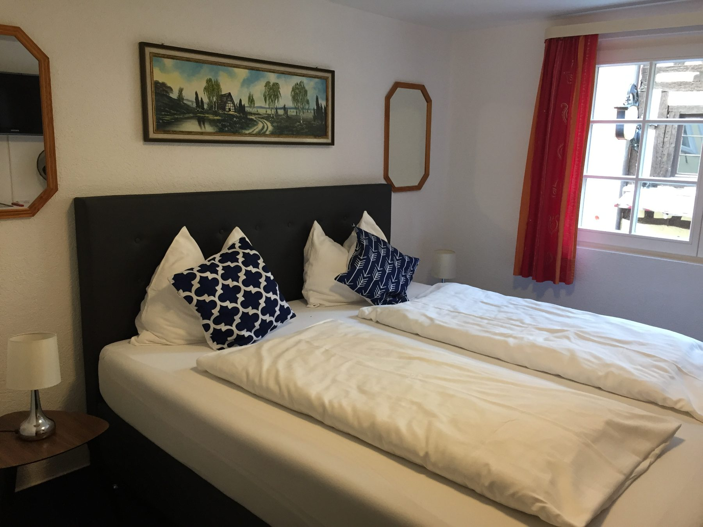
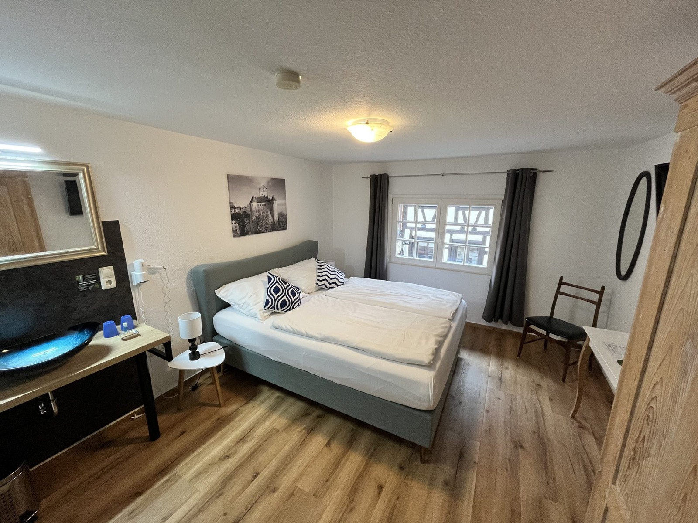
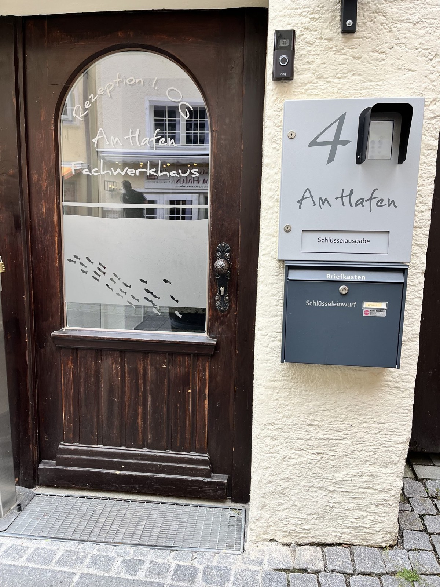

Kategorie
Deluxe Doppelzimmer
Ca. 20 m² mit Seeblick, original Holzbalken und Zimmersafe. Die schönsten Zimmer im Haus.

Denkmalgeschütztes Fachwerkhaus in der historischen Altstadt von Meersburg — nur zwanzig Meter vom Bodensee entfernt. Vier Generationen Gastfreundschaft seit 1956.

Herzlich willkommen
Das Fachwerkhaus liegt in einer ruhigen Seitengasse der historischen Altstadt — nur einen Steinwurf vom Bodensee entfernt.
Das Gästehaus Am Hafen besteht aus zwei gegenüberliegenden historischen Häusern aus derselben Epoche: dem denkmalgeschützten Fachwerkhaus von 1780 und dem Gästehaus direkt gegenüber.
Das Einchecken ist unkompliziert: Sie erhalten Ihren Schlüssel bequem über einen Schlüsseltresor — kommen Sie an, wann es Ihnen passt. Morgens den Blick auf die Spitalgasse, abends regionaler Wein in der Hafenschänke, dazwischen die malerischen Gassen Meersburgs.
Unterkünfte

Ca. 20 m² mit Seeblick, original Holzbalken und Zimmersafe. Die schönsten Zimmer im Haus.

Ca. 18 m² mit komfortablem Doppelbett und schöner Aussicht — der ausgewogene Klassiker.

Ca. 15 m² mit französischem Doppelbett (140 × 200 cm) und Blick in den ruhigen Innenhof.
Unsere Geschichte
Das Fachwerkhaus in der Spitalgasse 4 wurde ca. 1780 erbaut und steht heute unter Denkmalschutz. Es ist eines der ältesten noch vollständig erhaltenen Bürgerhäuser der Meersburger Altstadt.
Familie Jakopic/Lehmann führt das Gästehaus seit Generationen — mit Respekt vor der Geschichte und einem unkomplizierten, modernen Self-Check-in.

Meersburg am Bodensee
Das Gästehaus liegt in der Fußgängerzone der Altstadt — um die Ecke vom See, nah an allem.